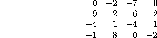
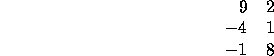
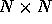
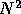

| Maximum Sum |
A problem that is simple to solve in one dimension is often much more difficult to solve in more than one dimension. Consider satisfying a boolean expression in conjunctive normal form in which each conjunct consists of exactly 3 disjuncts. This problem (3-SAT) is NP-complete. The problem 2-SAT is solved quite efficiently, however. In contrast, some problems belong to the same complexity class regardless of the dimensionality of the problem.
Given a 2-dimensional array of positive and negative integers, find
the sub-rectangle with the largest sum. The sum of a rectangle is the
sum of all the elements in that rectangle. In this problem the
sub-rectangle with the largest sum is referred to as the maximal
sub-rectangle. A sub-rectangle is any contiguous
sub-array of size  or greater located within the
whole array. As an example, the maximal sub-rectangle of the array:
or greater located within the
whole array. As an example, the maximal sub-rectangle of the array:

is in the lower-left-hand corner:

and has the sum of 15.
The input consists of an  array of integers. The input begins with a single positive integer N on a line by itself indicating the size of the square two dimensional array. This is followed by  integers separated by white-space (newlines and spaces). These integers make up the array in row-major order (i.e., all numbers on the first row, left-to-right, then all numbers on the second row, left-to-right, etc.). N may be as large as 100. The numbers in the array will be in the range [-127, 127].
The output is the sum of the maximal sub-rectangle.
4 0 -2 -7 0 9 2 -6 2 -4 1 -4 1 -1 8 0 -2
15